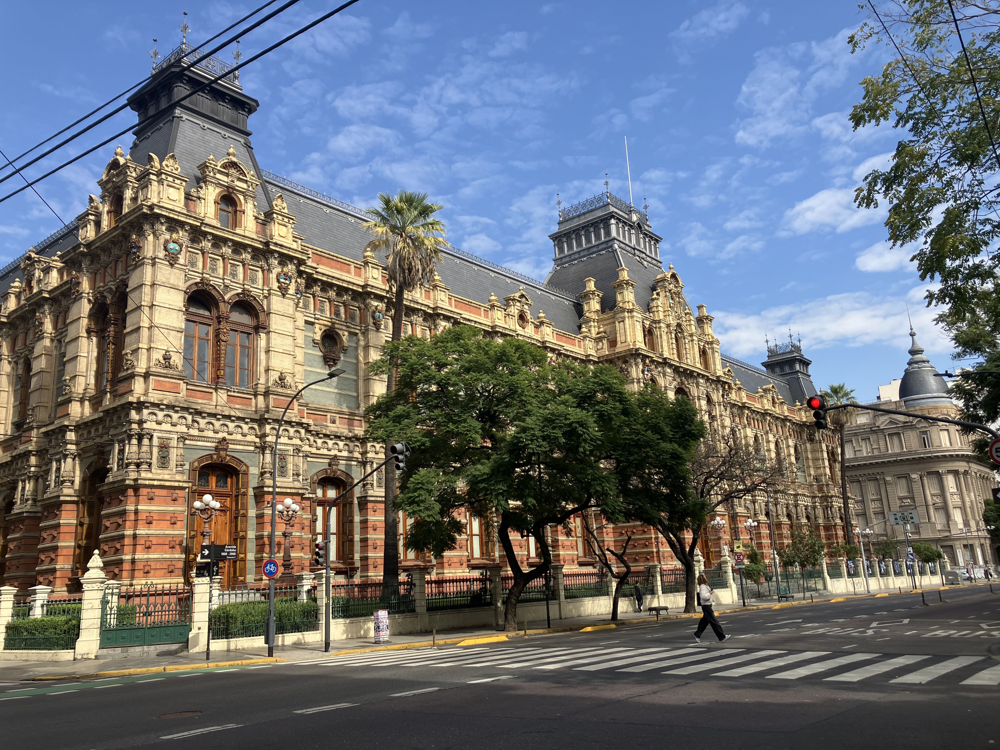
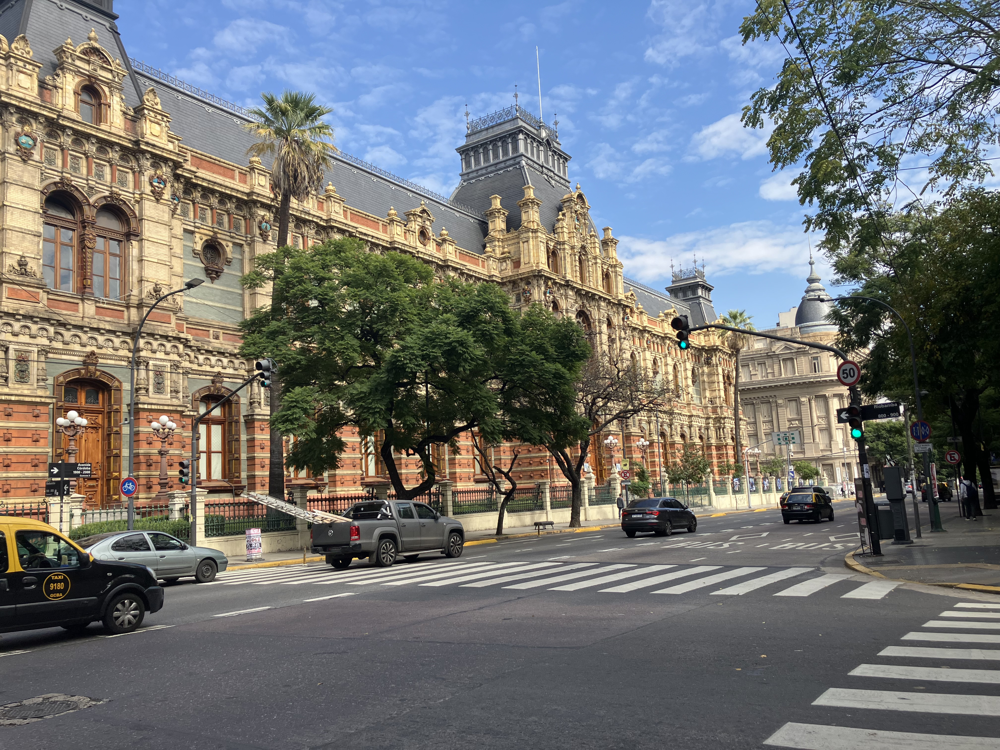
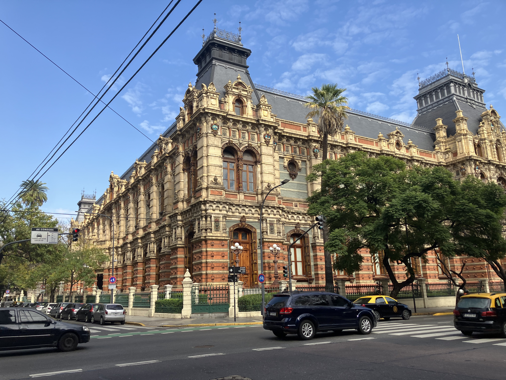
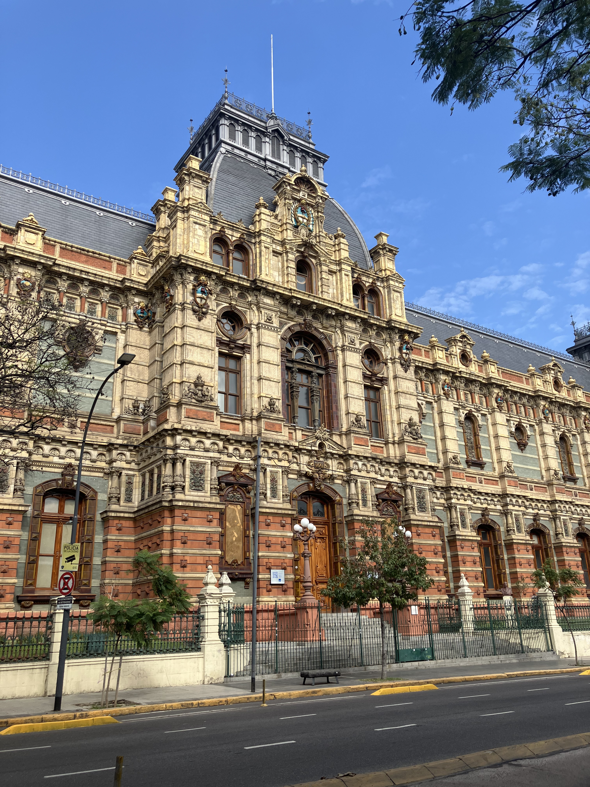
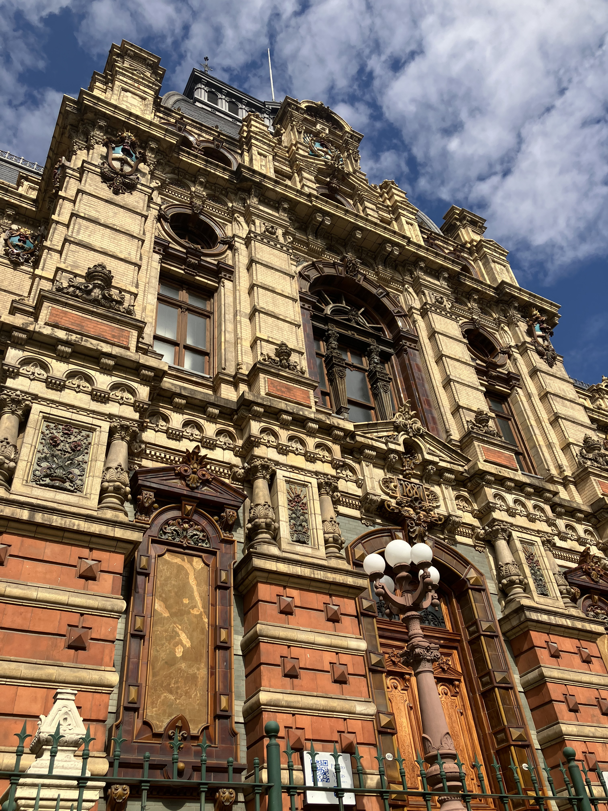
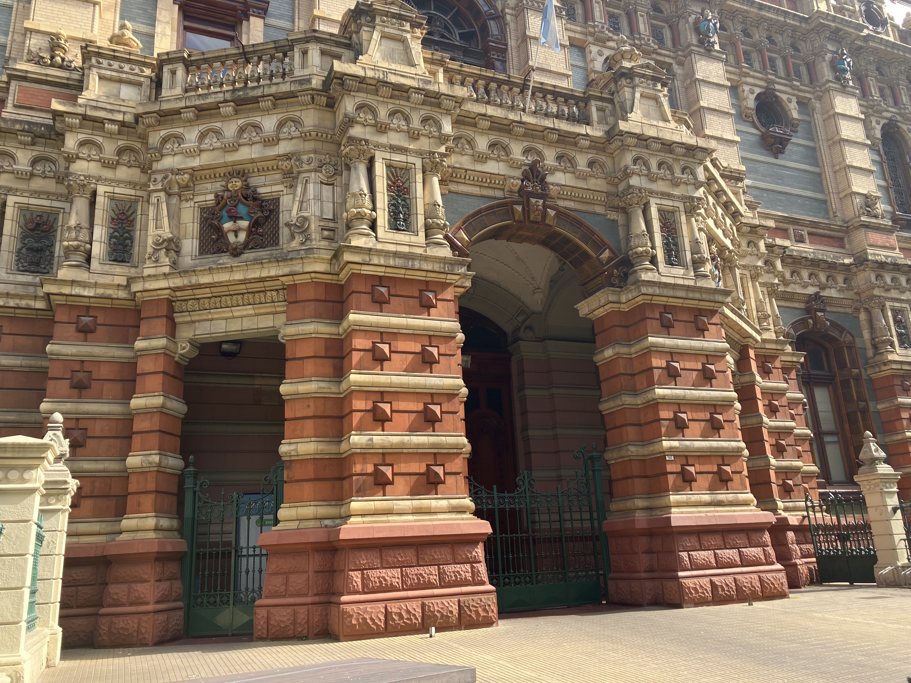
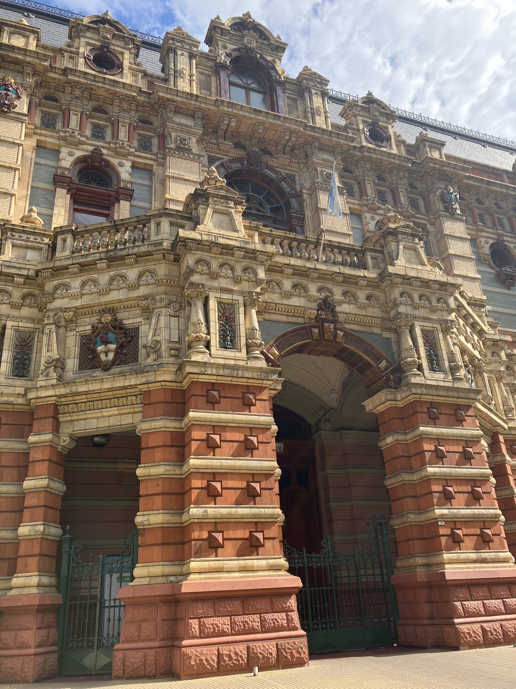
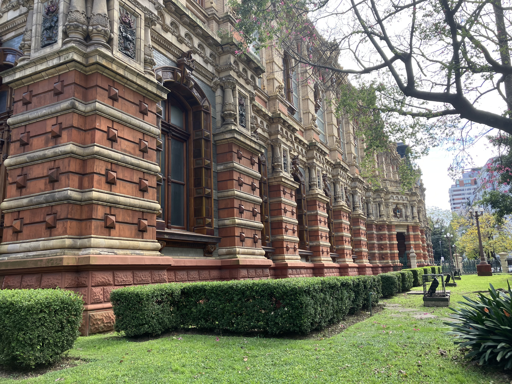

Palacio de Aguas Corrientes

Architect: Carlos Nyströmer, Olaf Boye
Location: Riobamba 750, Buenos Aires
Completed: 1894
Style: Eclecticism / Victorian Architecture
History
The Palacio de Aguas Corrientes was built between 1887 and 1894 as part of Buenos Aires’ major modernization and sanitation projects during the late 19th century. Originally designed to house the city’s main water distribution tanks, it became an essential piece of public infrastructure during a period of rapid urban growth. Despite its industrial purpose, it was conceived with extraordinary architectural ambition, reflecting the city’s desire to present itself as a modern and sophisticated capital.
Architecture
Its exterior is one of the most distinctive in Buenos Aires, covered with more than 300,000 glazed ceramic pieces and decorative elements imported from Europe, particularly from Belgium and England. The richly ornamented façade combines French academic classicism, Victorian eclecticism, and Neo-Renaissance influence, transforming what could have been a purely functional building into a monumental urban landmark. The use of polychrome ceramics, mansard roofs, and ornamental ironwork gives the palace its unique visual identity.
Legacy
Today, the Palacio de Aguas Corrientes remains one of the city’s most fascinating examples of infrastructure turned into art. It symbolizes the ambition of Buenos Aires during its period of modernization and demonstrates how even public utility buildings could be elevated to the level of architectural prestige. It continues to stand as a remarkable testament to engineering, design, and civic pride.
Gallery






